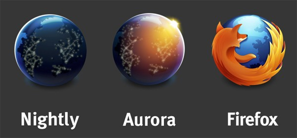

Introduction à Together.js
About Me
EtudiantMemebre & Responsable Mozilla TunisiaMemebre & Responsable FreewaysMozilla Representative
356
MERCI
PS : I'm using Firefox Nightly

C'est quoi Together.js ?
Librairie Javascript ( Open Source ) développée par Mozilla qui offre un ensemble d'outils de collaboration en temps réel à votre site web
Historique
Anciénnement connu par TowTruck
Lancé au Mozilla Summit 2013 #Toronto
Outils offerts
- Mouvement et des clicks des curseurs des utilisateurs
- Text chat
- Audio chat
- Co-Browsing : Navigation entre différentes page dans le meme domaine
- Sync en temps réel
- User Experience
Live Demo
Comment l'utiliser ?
< script src="https://togetherjs.com/togetherjs-min.js"> < / script> < button onclick="TogetherJS(this); return false;"> Commencer TogetherJS < / button>
Comment ça marche ?
Le Hub fait tout
SessionStorage non pas LocalStorage
webRTC ? Pas vraiment..
communication basée sur les messages
Pourquoi ?
Le futur de l'éducation sur le Web
Mozilla s'intéresse à l'éducation
Mozilla facilite le web
Pousser Together.js à ses limites
Conclusion
Together.js est..
- simple
- facile à utiliser
- open source
- by someone you trust
- pour tout le monde
Conclusion
Together.js est la première étape du futur de l'éducation sur le web
Essayez together.js :
https://togetherjs.com/
Documentation :
https://togetherjs.com/docs/
Comment nous rejoindre ?